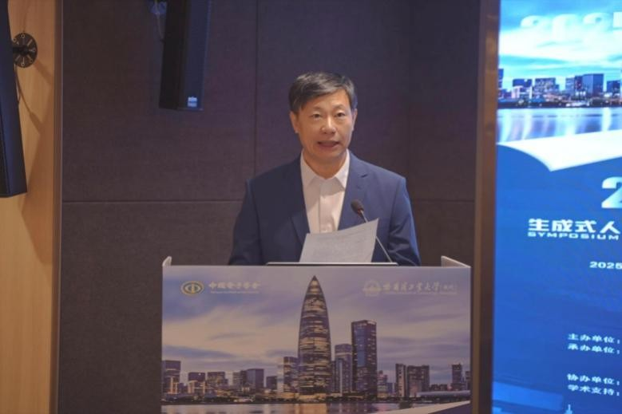
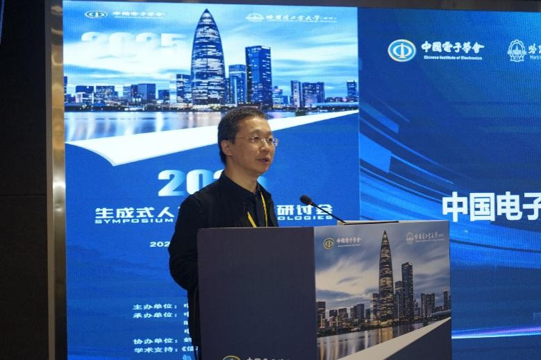
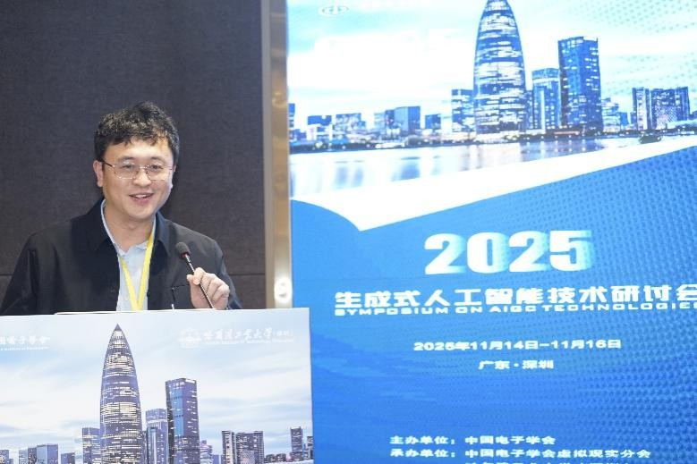
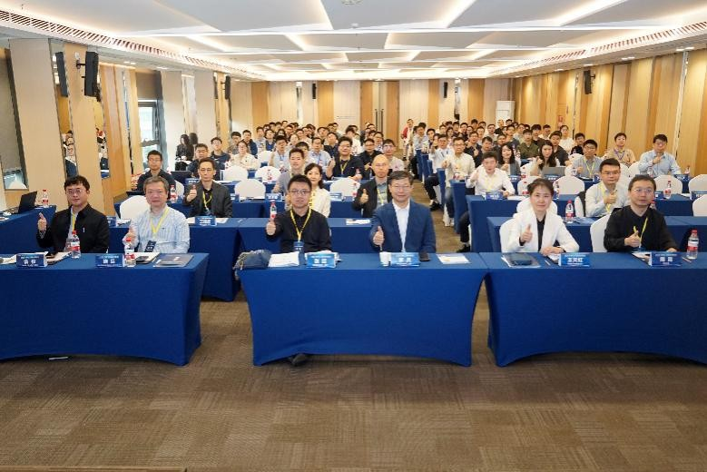

📢 TL;DR： 2025年11月15-16日，由中国电子学会主办的生成式人工智能技术研讨会在深举行。会议汇聚了包括清华、北大、哈工大、浙大、中科大、人大、百度、蚂蚁等在内的近20所顶尖高校与领军企业专家，通过20余场高水平学术报告，深度剖析了生成式AI在多模态、具身智能、工业应用及医疗交叉等领域的最新突破。

2025年11月15日至16日，由中国电子学会主办，中国电子学会虚拟现实分会、哈尔滨工业大学（深圳）、中国数字经济百人会共同承办，蚂蚁集团、百度集团协办，《信息前沿》学术支持的2025生成式人工智能技术研讨会在广东深圳成功召开。

研讨会由中国电子学会虚拟现实分会主任委员、浙江大学周昆教授，以及虚拟现实分会副主任委员、哈尔滨工业大学（深圳）智能科学与工程学院院长俞俊教授共同担任大会主席。中国电子学会副秘书长王天虹，哈尔滨工业大学（深圳）副校长李兵出席并致辞。
来自清华大学、北京大学、哈尔滨工业大学、哈尔滨工业大学（深圳）、浙江大学、中国科学技术大学、中国人民大学、北京航空航天大学、南开大学、大连理工大学、北京科技大学、合肥工业大学、深圳大学、南方科技大学、重庆邮电大学、青海师范大学、蚂蚁集团、百度集团等单位的专家出席了本次会议。
会议期间，多位行业权威专家分享了生成式AI领域的最新研究成果：
主旨报告环节分别由中山大学操晓春教授、深圳大学李坚强教授、哈尔滨工业大学（深圳）徐睿峰教授、哈尔滨工业大学（深圳）户保田教授、西安理工大学王晓帆教授主持，确保了研讨会的高水平学术碰撞。
研讨会期间召开了虚拟现实分会换届会议，选举产生了虚拟现实第二届委员会（共129人）。浙江大学周昆教授当选主任委员，王井东等13人当选副主任委员，邵天甲当选总干事。浙江大学当选为分会的支撑单位。

本次会议不仅聚焦语言、图形、视频等全模态技术，更深入探讨了生成式AI对医学、生物等学科的跨学科推动作用，以及在具身智能、工业化领域的产业价值。此次研讨会的成功举行，为我国生成式人工智能技术创新与应用拓展贡献了重要力量。